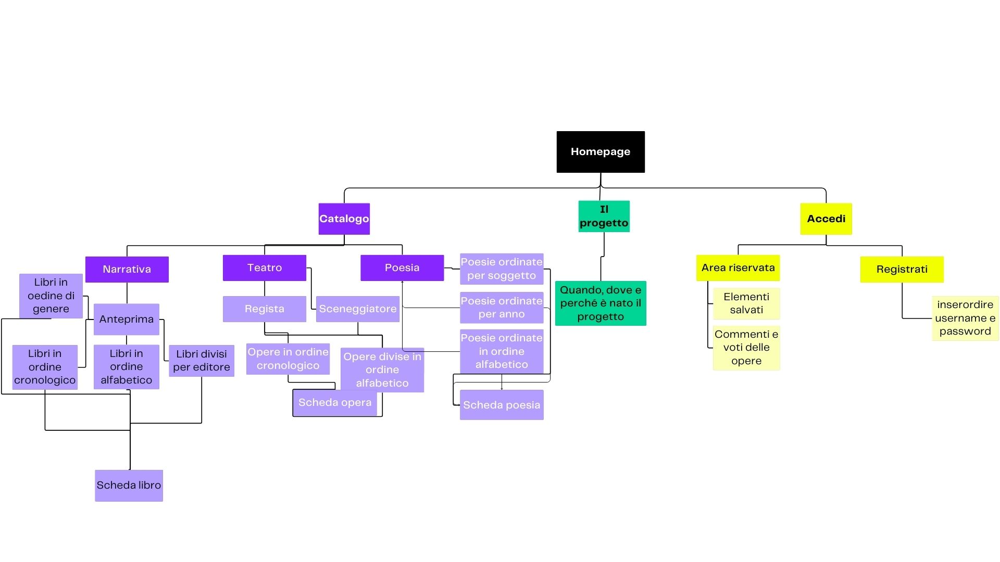

- Sistemi di browsing per valorizzare
- Utilities e tool per l'interazione
- Strumenti, servizi, tool e metodi aggiuntivi
1. Idea (Abstract)
Realizzare una collezione digitale delle opere letterarie e teatrali dello scrittore e regista Andrea Camilleri, ai fini di poter avere un'immagine più completa di un narratore che è molto di più del padre di Montalbano. Sarà permesso il browsing nella collezione sia per tipologia di opera che per ordine cronologico e alfabetico. Quando si analizzeranno i singoli item, cioè romanzi, poesie o progetti tetatrali, si visualizzeranno i metadati relativi. Tutti potranno accedere al sito ma grazie alla registrazione attraverso un username e una password sarà possibile commentare e salvare gli elementi preferiti. Il progetto guarda ai letttori di Montalbano ma anche a chi non si è mai confrontato con questo autore.2. Brief
2.1 Finalità
Il progetto si occupa di creare una collezione digitale dei romanzi, poesie e opere teatrali di Andrea Camilleri. L'obbiettivo è costruire una collezione digitale per poter avere un quadro più ampio ed elaborato della bibliografia di Camilleri.2.2 Pubblico
Il pubblico principale sono i lettori di Camilleri che attraverso questo strumento possono scoprire opere di cui difficilmente si parla. Ma è previsto anche un audience secondaria che sono i curiosi che mai hanno letto un'opera dello scrittore siciliano. L'accesso sarà sia come ospiti sia come utenti registrati, nel caso degli ospiti possono solamente visualizzare il catalogo e i vari item, gli utenti registrati potranno anche avere una propria libreria di elementi salvati preferiti e lasciare commenti.2.3 Accesso
La collezione si baserà principalmente sul testo e le immagini delle copertine. In questo modo si terrà un sito leggero che possa essere visualizzato sia su personal computer che su device portatili come smartphone e tablet. La risorsa web ha un design semplice adatto a tutti i dispositivi.2.4 Contenuti e Dati
Le immagini sono state reperite su internet tramite l'utilizzo di Google immagini applicando il tool "creative commons licenses".3. Benchmark
3.1 Analisi di mercato
Le proposte di catalogo della bibliografia di Camilleri sul web sono svariate ma solo questo progetto permette una ricerca facilitata da strumenti come i filtri per titolo o casa editrice e una linea del tempo che faciliti una lettura agevole dei vari contenuti. Il proposito di questo sito è quello di garantire un accesso intuitivo ed efficiente della bibliografia completa di Camilleri (narrativa, poesia, teatro). Inoltre i tre esempi analizzati o presentano una bibliografia approfondita ma limitata in un solo genere, come ad esempio la narrativa nel caso di Camilleri Fans Club, oppure riportano tutti i generi, come nel sito del Fondo Andrea Camilleri, ma selezionando solo alcune opere. Quest'ultimo sito è anche l'unico tra gli analizzati a dare la possibilità di filtrare il catalogo, non offrendo però, a mio avviso, dei criteri funzionali. Il catalogo che ho trovato più completo è quello di CamillerINDEX in cui possiamo trovare non soltanto tutti i generi ma anche un'ampia collezione di scritti.3.2 Descrizione dei concorrenti
I tre siti concorrenti che ho scleto di descrivere sono:https://www.vigata.org/index.html
https://www.fondoandreacamilleri.it/
https://www.camillerindex.it/libri/
Il primo https://www.vigata.org/bibliografia/biblios.shtml nasce per riunire appassionati lettori dello scrittore e regista siciliano e per la " divulgazione universale dell'Opera del Sommo Autore" (primo atto dello statuto). Il sito non presenta una struttura pulita e chiara e per il lettore penso sia molto difficile orientarsi a causa di un wireframe disordinato e inlogico. Parlando dell'architettura nella homepage troviamo una testa contenete l'immagine logo sia del fans club sia di Camilleri 100 (che riporta al sito del Fondo Camilleri). Sempre nell'header troviamo 3 citazioni di Camilleri con lo scopo, credo, di legittimare la loro esistenza. In quello che appare come body ma ancora prima del menu troviamo la "rassegna stampa" in cui però sono riportati non articoli ma collegamenti a siti inerenti a Camilleri(vedi CamillerINDEX oppure premio Camilleri) ma anche siti altri (la flora siciliana) e infine link di libri della Sellerio apparentemente scollegati da Camilleri. Sotto troviamo una serie di link che ci riportano ad esempio alla bibliografia senza però una navbar o un box di contenimento che possa aiutare la lettura. In basso non troviamo degli elementi di pagination, come non sono presenti elementi di browsing come le briciole di pane, né un footer in cui vengano indicati link utili (privacy, web project plan...) o i diritti di copyright.
Il secondo elemento analizzato è https://www.fondoandreacamilleri.it/ sito ufficiale dell'associazione Fondo Andrea Camilleri, nata con lo scopo di conservare l'archivio e la biblioteca dello scrittore e quindi promuovere pubblicazioni sulla sua vita e la sua opera. Il sito racconta tutti i servizi messi a disposizione dall'associazione e quindi non troviamo solo un catalogo (pagina che analizzeremo di seguito) ma anche una sezione dedicata alla mostra, ad esempio. Il layout del sito è pulito e risulta facile dell'utente orientarsi all'interno: nell'header troviamo ina lto a sinistra il logo della fondazione e ina lto a destra quello di Camilleri 100; una navbar arricchita con l'attributo sticky che permette di consultarla anche quando si scende. Il body è costituito da un testo, sotto una barra di navigazione primaria e infine 5 card, una per ciascuna categoria di cui si occupa l'archivio Il sito presenta alcuni elementi responsive (i link cambiano di stato al passare del mouse) ma potrebbe essere arricchito con elementi di slideshow accordion. In basso troviamo un footer in cui vengono indicati indirizzi utili (mail, pec ...) e i diritti di copyright.
Il terzo sito è https://www.camillerindex.it/libri/ tra quelli analizzati penso il più completo e efficace: tutti i link sono responsive, bottoni arricchiti con simboli che permettono una lettura immediata, dropdown nella navbar e interessanti elementi come un accordion dedicato all'andamento dei lavoro che rende quasoi partecipe l'utente. Nell'header troviamo il logo sulla sinistra, il titolo e una navbar con vari dropdown. La pagina del catalogo ci appare come un semplice elenco che grazie al sapiente uso dei colori (3 semplici) ci appare come chiaro. Avrei aggiunto un indice per potere capire fin da subito quali sono le categorie (romanzi, romanzi Montalbano) e grazie a dei richiami interni alla pagina raggiungere facilmente la sezione interessata. A livello item oltre al titolo, ci vengono mostrati autore, editore, anno di pubblicazione e la possibilità di cercare all'interno ad esempio del libro un determinato campo semantico (animali= bestia,bestiame, cane). Nella sidebar oltre a riproporre l'idea del progetto, come è strutturata troviamo anche i crediti e l'ultimo aggiornamento.Il footer riporta solo i diritti di copyright e il link del sito.
4. Struttura
4.1 Mappa concettuale

L'obiettivo fondamentale del sito è quello di offrire all'utente una panoramica sulla bibliografia di Camilleri, non solo la più nota relativa a Montalbano, ma anche romanzi autobiografici, storici, thriller... Oltre che scrittore Camilleri è stato anche scenografo, regista e ha partecipato anche a qualche progetto in qualità di attore. Tutte le opere possono essere navigate seguendo un ordine cronologico o alfabetico. I libri sono divisi anche per genere e editore mentre le poesie per soggetto.
4.2 Schema delle dipendenze
In questo schema delle dipendenze troviamo in cima la homepage che è la pagina di livello più elevato in cui troviamo la presentazione del progetto e dei contenuti e i sistemi di navigazione principale. Al secondo livello troviamo le varie pagine di secondo livello: il Progetto con l'evoluzione dell'idea dalla sua nascita alla realizzazione; il Catalogo, le tre raccolte di narrativa, teatro e poesia; la pagina accedi attraverso cui l'utente può autenticarsi e salvare in un'area riservata i singoli item o commentare La pagina Catalogo è il catalogo principale della collezione da cui poi possiamo accedere ai singoli item; è diviso per narrativa, poesia e teatro ma tutti e tre si aprono con un'anteprima che mostra all'utente alcuni elementi significativi della raccolta, ad esempio nella sezione narrativa la scelta dei primi 4 item vuole dimostrare la varietà della raccolta. Nella pagina del catalogo troviamo anche una barra di navigazione che permette al lettore interassato ad un item in particolare di accedervi immediatamente o a dei filtri( ordine cronologico, alfabetico...) che rendono più scorrevole la navigazione. Nell'ultimo livello abbiamo la scheda dell'item in cui troviamo tutte le informazioni relative all'item e un riassunto della trama.
4.3 Categorie Descrittive
Di seguito sono riportate le possibili categorie descrittive di un item della collezione, in particolare il N°1 della collana:- Titolo: Ora dimmi di te
- Sottotitolo: Lettera a Matilda
- Autore: Andrea Camilleri
- Descrizione: Romanzo autobiografico
- Editore: Bompiani
- Data di pubblicazione: 2018
- Tipo:libro
- Formato:cartaceo e ebook
- Codice identificativo:Isbn 9788845297755
- Lingua:italiano
- Pagine:112
5. Layout
5.1 Wireframe index
Questo è il wireframe della pagina home. Dal punto di vista dell'archittettura troviamo la sezione di navigazione con una navbar che si occupa della navigazione primaria, all'interno della navbar troviamo un dropdown button che se premuto permettono di accedere ai canali di navigazione secondaria. Sotto una testata con un immagine con soprascritto titolo r sottotilo. Scendendo troviamo il main che è diviso in 5 sezioni logiche. La prima è costituita da una citazione dell'autore. Successivamente troviamo una foto di Camilleri stesso. La terza sezione è divisa in due colonne in cui sono presentate la figura di Camilleri e come nasce il progetto. La quarta sezione è un accordion che se esplorato ci permette di avere una più ampia gamma di informazioni su Camilleri In fondo troviamo il footer con il copyright, i vari collegamenti ai social, i link di metanavigazione.{kind=link}
5.2 Wireframe catalogo
Nel wireframe del catalogo vediamo la navbar e le breadcrumbs entrambi elementi che ci permettono di tornare alla home e quindi rendere la navigazione del sito il più possibile agevole. Il corpo è diviso in due sezioni: in quella a sinistra troviamo un dropdown che ci permette di accedere a pagine in cui gli item sono divisi in ordine cronologico, alfabetico, per editore o genere. Nella sezione centrale possiamo vedere quattro item sotto forma di card che ci danno una prima visuale sulla raccolta.Ogni item ha indicato l'anno di pubblicazione, il genere e un pulsante che porta all'item Infine in alto a destra troviamo una barra di ricerca che permette all'utente interessato ad uno specifico elemento di raggiungerlo facilmente. Sotto troviamo un sistema di pagination per poter scorrere il catalogo. In fondo troviamo il footer con la metanavigazione e il copyright.{kind=link}
5.3 Wireframe item
Questo è il wireframe della scheda dell'item. Nella testata troviamo, come nella home e nei wireframe precedenti, la navbar per la navigazione primaria. Poco sotto ci sono le breadcrumbs che permettono all'utente di orientarsi e sono completamente navigabili. Nel corpo del documento troviamo la copertina del libro. Sotto c'è l'elenco dei descrittori, alla voce autore troviamo un link attivo che ci riporta alla pagina deidicata a Camilleri. Successivamente una sezione con i vari pulsanti per condividere sui social, lasciare un commento o mettere un like. Sul fondo troviamo sempre il footer con il copyright, i social e la metanavigazione.{kind=link}
6. Usabilità
Norme di usabilità per l'archittettura Dal punto di vista dell'architettura ho deciso che la navbar, che fa da navigazione principle, rimanga nella posizione in alto in tutte le pagine. Poi se si clicca sul logo o sull'immagine della testata si può tornare alla homepage. In ogni pagina, esclusa la home, troviamo le breadcrumbs navigabili per permettere all'utente di muoversi e riuscire a tornare alla home. Sono sfruttate anche come strumento di orientamento per agevolare l'esperienza utente. Si trova in fondo anche il footer che contiene i medesimi contenuti e lo stesso aspetto. Tutte le pagine sono pensate con una divisione in sezioni specifiche e dedicate a un contenuto.La pagina Catalogo è suddivisa in 3 sezioni, ognuna delle quali si apre si un'alteprima che dia all'utente un assaggio di quel che può trovare nella raccolta. Sulla colonna di sinistra inoltre un dropdown permette al lettore di dividere per ordine cronologico, alfabetico, per genere o editore la raccolta. Le pagine item sono organizzate con una sezione dedicata al libro, una fascia in fondo dove troviamo tutti i meta-dati visibili all'utente e un riassunto della trama. Inoltre il metadato relativo all'autore è un link navigabile, è un collegamento che può essere cliccato e portare alla pagina di Camilleri . Oltre alla navigazione primaria e ai canali di navigazione secondaria, che si attivano al click dei dropdown button nella navbar, troviamo vari bottoni e link che rimandano o a elementi item direttamente o al catalogo o ad altre aree del sito. Gli elementi responsive come l'accordion sono implmentati dall'utilizzo di javascript. I fogli di stile css hanno permesso l'uso dei colori, importanti per il layout del sito, della suddivisione in colonne come nella homepage o la realizzazione di tools come ad esempio le card del catalogo. Norme di usabilità per l'aspetto e la tipografia Per quanto riguarda l'aspetto tipografico del sito si presenta in maniera pulita e sintetica per permattere una lettura fluida. Il font utilizzato è il Verdana, i testi sono di colore nero così da risultare costantemente leggibili essendo lo sfondo prevalentemente bianco, nel caso in cui lo sfondo è blu i testi diventano bianchi. In caso ci siano degli elementi da enfatizzare, come ad esempio un link in un testo o una keyword, ho utilizzato il grassetto tramite il tag "strong" così da evidenziarlo al lettore. Tutti i link presentano la caratteristica, che in caso di hover con il mouse, cambiano sia il colore di sfondo che quello della scritta. Norme di usabilità per colori, font e icone I colori scelti sono il blu, il bianco e il giallo colori che tra loro si abbinano bene e ricordano la celeberrima copertina della Sellerio, editore a cui Camilleri è strettamente legato;le le gradazioni sono state scelte tramite uno strumento online: https://color.adobe.com/it/create/color-wheel così da ottenre una palette quanto più equilibrata. Il font scelto, come detto sopra, è Verdana l'ho scelto perché uno dei font sicuri per il web ed è ritenuto uno dei meglio leggibili, dal momento che è sans-serif. Per quanto riguarda le icone ho scelto di utilizzare icone da Fontawesome, richiamando nell'head del documento fontawesome4. Queste sono abbinate nella navabr e sotto agli item aiutandone una lettura immediata.7. Servizi
7.1 Sistemi di browsing per valorizzare
Nella sezione catalogo sono già presenti alcuni sistemi di browsing tra cui: la possibilità di navigare la raccolta seguendo 4 diversi ordini(cronologico, alfabetico, per genere o editore). Inoltre nella prima pagina del catalogo è prenete una barra di ricerca che permette all'utente interessato di inserire il nome di un contenuto specifico e raggiungerlo direttamente.7.2 Utilities e tool per l'interazione
Il sito come strumenti e utilities per l'interazione al momento sono implementati:- Bottoni: nel sito sono presenti dei bottoni che nel momento in cui l'utente ci passa sopra con il mouse cambia sia il colore di sfondo che della scritta per catturare l'attenzione.
- Accordion: nella pagina home troviamo un accordion, sfruttati per nascondere i vari filtri così da tenere pulita la pagina. Inoltre la possibilità di collassare permette una corretta visualizzazione su dispositivi mobile.
- Card: questo strumento viene utilizzato per raccogliere i dettagli e immagine di copertina dei libri nel sito, in modo che si noti subito la loro divisione rispetto agli altri contenuti; inoltre tutte le card hanno un pulsante che riporta al'opera in questione.
- Dropdowns: li utilizzo nella navbar per aprire la navigazione secondaria. Pagination: nella pagina catalogo permettono di scorrere ed esplorare anche in questa maniera.
- Timeline: permette all'utente di scorrere la raccoltra in ordine cronologico.
- Barra di ricerca: permette di ricercare un item specifico.